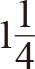

亚历克斯·罗赛塔和卢克·帕金在诺森比亚大学体育科学专业读大二。2015年3月，他们报名参加了一项研究咖啡因会对运动产生什么影响的实验。罗赛塔和帕金各自领到0.3克咖啡因，实验就此开始。然而，由于一个简单的数学错误，他们被送进了重症监护室。
实验人员将咖啡因溶解在橙汁和水的混合物里，罗赛塔和帕金喝下后参加了一项常规的运动表现实验，被称为温盖特测试。实验人员要求参与者尽力蹬踩健身车的踏板，以便观察咖啡因如何影响他们的无氧运动表现。但是，在喝下咖啡因混合物后不久，还没来得及骑上自行车，参与者就开始感到头晕，还出现了视力模糊和心悸的症状。他们立即被送往医院急诊科，并接受了透析治疗。在接下来的几天里，罗赛塔和帕金的体重均下降了近12.6千克。
原来，研究人员在计算剂量时犯了一个错误，参与者拿到的是30克粉状咖啡因，而不是0.3克。这相当于参与者在几秒钟内摄入了大约300杯普通咖啡，而已知10克咖啡因就可致人死亡。对帕金和罗赛塔来说幸运的是，两人都很年轻，也非常健康，即使摄入了过量咖啡因也没有留下什么后遗症。
之所以出现这个错误，是因为测试人员在手机中把小数点向右移动了两位，将0.30克变成了30克。这并非第一个由于小数点错误而产生重大影响的案例。其他类似错误造成的后果有时候很滑稽，有时候则是致命的。
*
2016年春天，建筑工人迈克尔·萨金特在完成一周的工作后开出了一张446.60英镑的发票。几天之后，他惊喜地发现，给他付账的公司将这笔款项的小数点放错了位置，他的银行账户收到了44 660英镑。随后的好几天萨金特过着如摇滚明星般的奢华生活，他花了几千英镑购买新车、毒品、名牌服装、手表和珠宝，以及赌博，直到警察找上门来。萨金特被强制偿还多拿的钱，并被罚做社区服务。
在2010年大选前夕，英国保守党发布了一份文件，强调了现任工党政府治理下英国各地区之间的巨大贫富差距。该文件声称，最贫困地区有54%的女孩在18岁之前怀孕，而在最富裕地区这一比例仅为19%。这组旨在凸显工党执政13年间造成的社会不平等的统计数据，事实上没有起到打击对手的作用，反而引发了争议，因为工党评论员和政客指出实际的数据分别为5.4%和1.9%。除了在小数点上犯了一个明显的错误之外，保守党坚定不移地相信“一些地区有超过半数的女孩在青少年时期就怀孕了”，也被当作保守党与选民之间脱节的例证。尽管位置错误的小数点给保守党带来了极大的尴尬，但他们仍然赢得了2010年大选。可见，他们的错误也不是致命的。
然而，对于85岁的养老金领取者玛丽·威廉姆斯来说，结果却迥然不同。2007年6月2日，社区护士乔安妮·埃文斯去拜访威廉姆斯夫人，代替同事给这名糖尿病患者注射胰岛素。她在第一支胰岛素注射笔里装上了患者所需的36“单位”胰岛素，但当她注射时这支笔却卡住了。她将一并带来的另外两支笔拿了出来，但全都不行。她担心威廉姆斯夫人如果不及时注射胰岛素身体情况会恶化，就回到车上取了一支普通注射器。注射笔以“单位”进行标记，而注射器则以毫升为单位，不过，埃文斯知道每个“单位”相当于0.01毫升。于是，她把容量为一毫升的注射器装满，注射到威廉姆斯夫人的手臂上。为了完成整个疗程，她又注射了三次。她不停地问自己，为什么威廉姆斯夫人需要注射这么多次，而她的其他病人只要注射一次就够了。她的工作终于完成了，之后她离开了威廉姆斯夫人的家。直到当天的晚些时候，她才意识到自己犯了一个可怕的错误。她没有按照正确剂量给威廉姆斯夫人注射0.36毫升胰岛素，而是注射了3.6毫升，多出了9倍。她立即打电话给医生，但那时威廉姆斯夫人已经由于注射胰岛素过量而突发心脏病离世了。
尽管这些案例中的错误看似很明显，但它们的一再出现表明，简单的错误也有可能发生，并造成严重的后果。在某种程度上，这些都源于十进制数字系统的错误。在数字222中，不同数位上的2分别代表不同的数值，即2、20和200，后一个是前一个的10倍。10这个比例因子使得小数点错置可能引发严重的后果。如果我们使用二进制系统（现代计算机技术所依赖的系统，每个数位上的数值是后一个的两倍），也许就可以避免这类错误。比如，注射两倍的胰岛素或摄入4倍的咖啡因可能不会造成致命的后果。
在本章中，我们将探讨日常生活中的计数系统所带来的更多代价高昂的错误。本章揭示了看似长期废弃的数字系统的潜在影响，这些系统为人类历史打开了一扇窗，也为生物学带来了一束光。我们将发现它们的缺陷，并研究避免常见错误的替代系统。我们沿着计数系统的自然选择历程一路走来，最后与人类文化的发展之路殊途同归。我们像揭露文化偏见一样，也揭露了我们潜意识中的根深蒂固的数学思维，有时我们甚至不愿意承认它对我们的看法的限制。
我们当前主要使用十进制位值系统。位值的意思是，同一数字在不同的位置上表示不同的数值。十进制是指相邻位置上的相同数字是其近邻的10倍或1/10。不同位置之间的倍增因子10叫作基数。我们之所以使用基数10而不是其他基数，更多的是出于我们的生物学特性，而非其他深思熟虑的规划。虽然我们的先辈选择了不同的基数，但绝大多数发展出数字系统的文明（亚美尼亚人、希腊人、罗马人、印第安人和中国人等）都选择了十进制。原因很简单，当我们意识到需要进行列举时，就像我们今天教孩子一样，我们会用10个手指计数。
虽然基数10是我们的祖先最常用的系统，但有些文明则选择从其他生理方面构建其他基数。加利福尼亚州的一个原住民部落（Yuki）用手指之间的间隔作为标记，而不是手指本身，所以他们的基数为8。苏美尔人以60为基数，用右手大拇指作为指针，点数右手4个手指的12个关节，再用左手的5个手指做指针，形成5组12个（也就是60）的计数系统。巴布亚新几内亚的奥克萨普明人使用基数为27的系统：一只手从大拇指开始（1），沿着手臂向上移动到达鼻子（14），直到右手小指结束（27）。因此，虽然10个手指不是启发数字系统概念形成的唯一身体部位，但它们是最明显的，也是我们的祖先在发展数学时最常用到的。
一旦某个文明建立了一套计数系统，它就开启了发展更高级数学并将其应用于实践中的可能性。实际上，许多最古老的人类文明都精通复杂的数学。比如，公元前3000年，埃及人可以做加、减、乘法运算，以及使用简单的分数。他们掌握了金字塔体积的计算公式，并且有证据表明他们偶然发现了边长为3、4、5的直角三角形，即毕达哥拉斯三角形，远早于毕达哥拉斯本人。埃及人虽然使用基数10，但还未建立位值系统。他们用不同的象形文字表示10的不同次幂。这些数字图示不是按照特定顺序书写的，但埃及人看到图形就知道它表示的数字是多少。数字1是一条竖线，就像我们今天的1一样，10是一个牛轭，100是一卷绳子，1 000是一朵华丽的睡莲，10 000是一根弯曲的手指，100 000是一个蝌蚪，100万是上帝——无穷或永恒的化身。古埃及人的最大数量差不多就是100万。如果他们想表示数字1 999，就会画1朵睡莲、9卷绳子、9个牛轭和9条竖线。尽管很笨拙，但用该系统表示10亿以下的数字完全没有问题。然而，如果埃及人知道了宇宙中恒星的数量（在我们的十进制值系统中可以表示为1 000 000 000 000 000 000 000 000，即1024），他们将不得不画出1018个“上帝”，这在实际中根本行不通。
在许多方面，罗马人比埃及人更加先进。众所周知，罗马人大规模推广书籍、混凝土、道路、室内管道等发明和公共卫生概念。然而，他们的数字系统却更原始。他们用7个字符I、V、X、L、C、D和M分别表示数字1、5、10、50、100、500和1 000。鉴于他们的数字系统有些麻烦，罗马人写数字时总是按照从左到右、从大到小的顺序写，这样就可以简单地把数字加在一起。比如，MMXV表示1 000 + 1 000 + 10 + 5，也就是2 015。
因为书写大数字非常笨拙，所以他们引入了额外的规则。如果在较大数字的左侧有一个较小数字，则表示要从大数字中减去小数字。比如，2019写作MMXIX而不是MMXVIIII，X减去I可以得到9，这样写节省了几个字符。如果你认为这还不够复杂，很可能是因为我们今天了解的罗马数字标准化规则及符号与罗马人实际使用的不一样。比如，伊特鲁里亚人可能使用的是像这样的符号，而不是I、V、X、L和C，但这些尚有争议。上述罗马数字的规范化符号和规则可能经由后罗马时代演化了多个世纪而来，古罗马人使用的系统可能远没有这么统一。
罗马帝国覆灭后，罗马数字没有像埃及象形文字那样被毁灭。今天，很多建筑物上仍然以罗马数字标示其竣工日期，这给很多于近现代完成的项目增添了一丝古老的气息。出于这个原因，对石匠来说，19世纪后期的活计尤其难干。1888年建成的波士顿公共图书馆上刻着MDCCCLXXXVIII，共13个字符，是上个千年里最长的罗马数字。不只是建筑师认为用罗马数字可以营造历史的沉淀感，时尚风格指南也建议在手表上使用罗马数字，因为这可以彰显佩戴人的老练。英国在位时间最长的女王伊丽莎白二世（Elizabeth Ⅱ）的名字看起来很庄重，但写成“伊丽莎白2世”则很像电影续集了。电影和电视节目也会使用罗马数字来表示制作日期，不过原因不尽相同。
尽管罗马数字的寿命很长，但从未风靡世界，因为它们错综复杂的符号结构严重阻碍了高等数学的发展。事实上，罗马帝国十分缺乏杰出的数学家，他们做出的数学贡献也不大。正如我们看到的那样，每个罗马数字都是一个潜在的复杂等式，人们需要做加法或减法运算才能得出结果。这导致即使把两个罗马数字做简单的加法也很困难。比如，我们不可能像小学时做加法运算那样，在纸上写下两个罗马数字，一个在上面，一个在下面，然后逐位相加。两个不同的罗马数字中位于相同位置的两个相同符号，并不一定表示相同的数值。你不能简单地用MMXIX从右到左逐位减去MMXV（X–V = 5，I–X =–9……），也就无法算出2019与2015的差是4。至关重要的是，罗马人没有位值系统的概念。
*
早在罗马人和埃及人之前，生活在今天的伊拉克的苏美尔人就已经拥有了先进的数字系统。苏美尔人通常被称为文明的创始人，他们为发展农业而开发出应用广泛的技术和工具，包括灌溉系统、犁，甚至是轮子。随着农业社会的迅速发展，出于官僚主义的目的，准确地测量土地面积变得有必要，税收就是据此确定和记录的。因此，大约5 000年前，苏美尔人发明了第一个位值系统，其基本概念最终传播到世界各地。数字要按照规定的顺序书写，左边的数字表示的数值比右边的相同数字更大。在现代位值系统中，数字2019中的9表示9个1，1表示1个10，0表示0个100，2表示2个1 000。相同的数字每向左移动一位，就会变大10倍。虽然苏美尔人选择以60为基数，但他们采用了跟我们完全相同的数位规则。最右边的一列代表单位1，往左边一列代表60，再往左一列代表3 600，依此类推。在苏美尔人的六十进制中，数字2019代表9个1、1个60、0个3 600、2个216 000，换算成十进制数字为432 069。相反，如果苏美尔人想用六十进制表示2019，就应写作3339，其中符号33代表33个60（也就是1980），符号39代表39个1。
位值系统的发展可以说是有史以来最重要的科学启示。15世纪的欧洲广泛采用了以10为基数的印度–阿拉伯位值系统（我们今天仍在使用），之后就爆发了科学革命，这显然并非巧合。位值系统的优点在于，只需几个简单的符号就可以表示任意大的数字。在埃及和罗马数字体系中，符号的位置不具备全局意义。相反，数值大小是由符号本身决定的，所以这两种文化都受到了只能表示有限数值的数字的束缚。相比之下，苏美尔人可以用他们的60个符号表示任何数字，并进行高级数学运算，比如二次方程（在农业生产环境中分配土地时自然产生）和三角计算。
苏美尔人使用六十进制系统的主要原因也许是，它显著减少了分数和除法的使用量。60有很多因数，1、2、3、4、5、6、10、12、15、20、30和60都可以被60整除。假如6个人要平分一磅（100便士）或一美元（100美分），最后余下的4便士该分给谁将引发分歧。然而，1苏美尔米娜（60谢克尔）可以在2、3、4、5、6、10、12、15、20、30个人之间均分并且不会引发争吵。使用60这个基数，我们也可以轻松地给12个人均分蛋糕。在六十进制位值系统中，1/12也就是5/60。他们可以把1/12这个数字写作0.5（小数点后一位表示1/60，而不是十进制中的1/10），而不是我们十进制位值系统中令人头疼的0.083 333…。出于这个原因，就像圆形蛋糕一样，苏美尔天文学家将夜空的弧度分成360（6×60）度，在此基础上做出天文预测。
古希腊人沿袭了苏美尔人的传统，将每度分割成60分，记作'，将每分分割成60秒，记作''。十六进制位值系统今天应用于天文学领域，天文学家利用该系统对尺寸各异的天体进行测量和分级。由于和天文学的这种联系，用于描述圆的角度被认为起源于对太阳的描述。此外，度现在也用于衡量温度。但一个不那么浪漫的（数学）看法是，我们既然已经用'和''表示分和秒了，那么用°来作为度的单位也是自然而然的。
我们虽然对天文学中的分和秒不太熟悉，但六十进制位值系统仍主宰着与我们的日常生活密切相关的时间。无论我们是醒着还是睡着，无论我们是否意识到这一点，我们确实都在用六十进制计量时间。我们把一小时划分成60分钟，把一分钟划分成60秒，这绝不是偶然。
然而，小时是以12为基数组合在一起的。尽管最初使用了10这个基数，但古埃及人把一天分成24个等份，包括12个日间时和12个夜间时，与公历中对月份的划分相似。在白天，人们使用有10个分区的日晷计时。古埃及人还增加了两个曙暮时，分别出现在白天开始和结束的时候，不过没有反映在日晷上。根据夜空中指定恒星的运行轨迹，夜晚也被分成12个等份。
埃及人规定白天包含12个小时，所以随着季节的变化，小时的长度也会发生变化——夏季变长、冬季变短。古希腊人意识到，要想在天文计算方面取得重大进展，必须采取等长的时间段，因此他们产生了将一天均分成24个小时的想法。然而，直到14世纪欧洲出现机械钟，这个想法才得以实现。19世纪初，走时可靠的机械钟已经普及开来。欧洲的大多数城市都将每一天分为两段，每段包含12个小时。
在大部分英语国家，一天通常都被划分成两个12小时。虽然大多数国家都使用24小时制，以区分早上8点（8:00）和晚上8点（20:00），但是美国、墨西哥、英国和多个联邦国家（澳大利亚、加拿大、埃及、印度等）仍然使用缩写a.m.和p.m.来区分早上8点和晚上8点。这种差异有时会造成问题，特别是对我而言。
读研究生期间，我得到了一个去拜访普林斯顿大学合作者的机会。我一出门旅行就会紧张，这是从我父亲那里继承的。每当我要踏上一段国际旅途时，总会听到他用焦虑的声音在旁边提醒我“钱、机票、护照”，就像我记忆中高中数学老师里德操着爱尔兰口音讲授的勾股定理一样：“斜边的平方等于其他两边的平方和。”
不出所料，我提前4个小时到达希思罗机场。两个半小时后，我遇到了一位更放松、经验也更丰富的主管，他的起飞时间比我还早一点儿。我的学术访问之旅卓有成效，但我的旅行偏执症意味着我不得不缩短最后一天观光纽约的行程，以确保我有足够的时间回到普林斯顿，并且睡个好觉。那天晚上，我打包好行李，整理干净房间，一再检查钱、机票、护照无一缺失，又设定了清晨4点的闹钟，保证不会延误9点钟的航班。
我清晨4点准时起床，从普林斯顿乘坐火车，两个半小时后到达纽瓦克国际机场。然而，当我在离港布告栏上寻找我的航班时，却没有找到。我一遍又一遍地检索，但列表上紧随8点59分前往圣卢西亚的航班之后的就是9点01分前往杰克逊维尔的航班。于是我去问讯处询问坐在那里的一位女士，她给我的回复是：“今天飞往伦敦的唯一一趟航班将在晚上起飞，先生。”我简直不敢相信，我居然会犯这种错误。我在做准备工作时一直非常小心，但我似乎忽略了一个事实，那就是我以为我要乘坐的航班根本不存在。我突然意识到发生了什么，并追问那位女士这架飞机今晚什么时间起飞。“晚上9点，先生。”她答道。
我把a.m.和p.m.弄混了，这种错误在24小时制中根本不会发生。幸运的是，我犯的错并没有误事。我受到的惩罚只是要再等待14个小时才能登机，但互联网上充斥着相反的故事，有些人因为弄混a.m.和p.m.而错过航班，不得不重新购票。毋庸置疑，这种经历只会加剧我对旅行的焦虑。
我发现，在21世纪准时到达机场是一件相当困难的事，但想象一下，在时间系统混乱且不同步的19世纪初，长途旅行将会多么困难重重。19世纪20年代，虽然欧洲的大多数国家都已经把一天均分成24个小时，但比较国与国之间的时间十分困难，以至于几乎毫无意义。少有国家能在其国土范围内实施统一的时间标准，更不用说与邻国相一致了。英国西部的布里斯托尔的时间可能比法国巴黎晚20分钟，而英国伦敦则比法国西部的南特提早6分钟。造成差异的原因通常是，每个城市都根据太阳在天空中的位置来定地方时。由于牛津在经度上比伦敦偏西

度，太阳在牛津到达最高点的时间就比伦敦晚大约5分钟，因此牛津的地方时也比伦敦晚5分钟左右。地球自转一周是24小时，这意味着经度上的每一度对应4分钟。布里斯托尔位于伦敦以西2.5度，所以又比牛津晚5分钟。时差给快速发展的铁路长途旅行带来了问题，也推动了英国各地的时间统一。英国各个城市的地方时的差异导致时间安排混乱，再加上司机和信号员之间沟通不畅，误点事件时有发生。1840年，西部大铁路在其路网中采用了格林尼治时间。利物浦和曼彻斯特等工业城市自1846年也开始采用这一时间。随着电报的出现，格林尼治皇家天文台帮助实现了英国各地时间的同步。尽管英国的绝大多数城市都很快进入了铁路时代，但一些城市，特别是那些有着强烈宗教传统的城市，却拒绝放弃“天赐”的太阳时，没有选择路网中更加实用的时间。直到1880年英国议会通过了立法，绝大多数太阳时的坚定拥护者才最终妥协。话虽如此，但牛津大学基督堂学院的汤姆塔内的大钟仍然会在整点过5分时响起。
意大利、法国、爱尔兰和德国都紧随其后采取了各自的统一时间，巴黎时间比格林尼治时间早9分钟，比都柏林时间晚25分钟。但在美国，情况却没有这么简单。美国大陆横跨了58个经度，对时差近4个小时的不同地区来说采取统一时间是不现实的。在冬天，当缅因州的太阳已经落山时，华盛顿州却还是午餐时间。显然，在这种情况下，地方时有一定的作用；但在19世纪中期，情况非常极端，所有大城市都坚持使用地方时。因此，1850年在新英格兰开展业务的大多数铁路公司都遵照各自的时间，通常基于其总部所在地或某个人流量较大的车站的时间。在一些繁忙的路口，最多的时候需要记录5个不同的时间。由于缺乏统一性而造成的混乱引发了许多事故。1853年发生的一起事故导致14名乘客死亡，这加速了新英格兰制定铁路标准时间的步伐。随着时间的推移，有人提议将美国从东至西划分为几个时区，每个时区与其相邻时区相差一个小时。1883年11月18日——这一天被许多美国人称为有两个正午的一天——整个大陆上所有车站的时钟都被重置。美国自此划分为5个时区：殖民地时区、东部时区、中部时区、山地时区和太平洋时区。
受到美国划分时区的启发，1884年10月，在华盛顿特区举办的国际子午线会议上，来自加拿大的桑福德·弗莱明爵士提议将整个地球等分成24个时区，形成一个全球化的标准时钟。地球被24条从南极到北极的经线分开，国际日从格林尼治子午线的午夜时分开始。1900年，地球上的几乎所有地方都被划归在某个标准时区里，但直到1986年尼泊尔最终将其时钟设置为比格林尼治标准时间提早5小时45分钟，才实现了所有国家都参照本初子午线计时。时区之间通常相差一小时，这避免了大量的麻烦和混乱，也大大简化了邻国之间的时间表和贸易。然而，时区的引入并没有完全消除混乱。它通常意味着，当错误发生时，不只是延迟几分钟，有时甚至达到一个小时，这就有可能引发灾难了。
*
作为1959年古巴革命战争的领导者，菲德尔·卡斯特罗和他的兄弟劳尔·卡斯特罗及切·格瓦拉推翻了古巴的独裁统治者富尔亨西奥·巴蒂斯塔。卡斯特罗秉持着马克思列宁主义哲学，将古巴变革为一党制国家，并实施全面社会改革，其中之一就是将工业和企业国有化。但美国政府无法接受在其家门口诞生一个社会主义国家。1961年，随着冷战接近高潮，美国政府制订了推翻卡斯特罗政府的计划。就这样，由1 000多名古巴的持不同政见者组成的2506旅，在危地马拉秘密营地接受了训练。美国还在尼加拉瓜附近部署了10架B26轰炸机（美国曾向卡斯特罗的前任提供过这种轰炸机），协助行动。4月17日，流亡旅在古巴南部海岸的猪湾发动了一次袭击，希望由此煽动古巴原住民加入其中。
但是，该计划很快就陷入了困境。4月7日，在袭击行动发生的10天前，《纽约时报》就已经得知了这项计划，并发表了一篇头条报道称美国一直在训练反卡斯特罗政府的持不同政见者。这引起了卡斯特罗的警惕，他采取了严格的防御措施，将可能参与袭击行动的持不同政见者监禁起来。4月15日星期六，也就是袭击行动的两天前，多架B26轰炸机飞往古巴，试图摧毁卡斯特罗的空中武装，但这次行动几乎完败。
这次拙劣的行动还产生了其他影响，古巴外交部部长劳尔·罗阿在联合国大会的紧急会议上谴责美国轰炸古巴的行动。由于全世界的注意力都集中在这个问题上，当时的美国总统肯尼迪怕留下美国参与其中的进一步证据，就取消了原定于4月16日上午对古巴的空袭。
由于2506旅完全由古巴的持不同政见者组成，与美国没有明显的联系，因此肯尼迪对其袭击计划不知情是合理的。4月17日早晨，他批准该旅在猪湾登陆，而等待他们的是2万名准备充分的古巴军人。截至4月18日晚，流亡旅的入侵行动已濒临失败。为了做最后的挣扎，肯尼迪下令驻扎在尼加拉瓜的B26轰炸机对古巴军队发起攻击，由位于古巴东部的美国航空母舰派出喷气式飞机进行保护，空袭定于4月19日早晨6点30分开始。
随着规定时间的临近，喷气式飞机已经准备就绪，但B26轰炸机却没有出现。事实上，B26是于尼加拉瓜中部时间6点30分起飞的，于古巴东部时间7点30分才到达，整整晚了一个小时。古巴军队击落了两架带有美国标志的B26轰炸机，这确切地证明美国参与了此次袭击行动。一个简单的时区错误造成了巨大的政治影响，古巴因此更坚定地加入了苏联阵营。
事实上，有很多人都认为十二进制位值系统优于我们常用的十进制系统。英国和美国的十二进制协会认为，12有6个因数（1、2、3、4、6、12），而10只有4个因数（1、2、5、10），所以12比10更具优势。我觉得他们说到点子上了。
我的两个孩子也通过让我苦不堪言的亲身经历告诉我，平均分配很重要。我敢肯定，他们更喜欢每人只分到一颗糖果，而不是一人分到5颗而另一人分到6颗。在去我父母家的路上，我在一个加油站停下车，买了一包糖果（星爆糖）。我把糖果放到后座上让孩子们分，但我事先并不知道包装袋里有11颗糖果。结果是，在那次漫长的北方之旅余下的时间里，两个孩子一直在争吵，这也是我现在每次只买偶数颗糖果的原因。我有个朋友家里有三个孩子，购买零食时总是每次买三份。如果你是这类以儿童为主要消费群体的产品制造商，你就可以以12个一组的形式销售，从而最大限度地增加消费群体，满足有1、2、3、4、6、12个孩子的家庭的购物需求。同样，当你分配某样东西时，重要的是每个人得到的数量相同（比如在儿童聚会上切蛋糕），12个一组能让你在公平的基础上有更多的灵活性。即使不是糖果或蛋糕，我敢肯定孩子们也会设法找些别的东西来争吵。
人们之所以支持十二进制而不是十进制，主要是因为在以12为基数的系统中，分数的形式更简单，就像苏美尔人的六十进制系统一样。比如，在十进制中，1/3只能通过无限循环小数0.33333…来表示，而在十二进制中它可以简单地被看作4个1/12，并记为0.4。为什么这一点很重要呢？其中一个原因是，在重复测量时，无法精确表示的数字可能会产生重大的影响。比如，你想把一根1米长的木料等分成3段长度相同的木块，再用它们做一个凳子。如果使用粗略的十进制尺子，你就得让第一个和第二个1/3都近似等于33厘米，使最后一个1/3近似等于34厘米。用这三根木头做成的凳子腿长短不同，坐上去可能不太舒服。但在一把十二进制的尺子上，1/3米或者说4/12米是一个精确的标记，这使得你可以轻松地把木头切分成同样长的三段。
十二进制系统的倡导者声称它有时会令四舍五入变得没有必要，从而减少许多常见的麻烦。在某种程度上，他们的说法是对的。每条腿长短不一的凳子会带来些许不便，但在我们常用的十进制系统中，因为必须对数字取整而产生的简单的舍入误差，可能会造成更严重的影响。
比如，在1992年的德国大选中，一个简单的舍入误差差点儿导致获胜的社会民主党在议会中少得到一个席位，当时绿党的得票率被四舍五入为5.0%，而不是实际的4.97%。[1]一个相反的案例是1982年，一个新成立的温哥华证券交易所指数在近两年的时间里持续下跌，虽然其市场表现看涨。[2]每次发生交易，指数估值都会向下舍入到小数点后三位，该指数每天有3 000笔交易，以致一个月就下跌了大约20点，重挫了市场信心。
尽管从十进制向十二进制转换可以减少四舍五入带来的误差，但也有可能引发动荡和恐慌，这意味着在短期内一个工业化国家似乎不太可能从十进制系统转换到十二进制系统。然而，许多发展迅速的工业化国家曾经广泛使用了英国的计量系统，这种系统就是基于十二进制。1英尺[3]可换算成12英寸，1英寸可换算成12英分。此外，1磅曾经也可换算成12盎司。盎司和英寸这两个词源于同一个拉丁词语“uncia”，意思是十二分之一。事实上，在用于称量贵金属和宝石的英国金衡制中，1磅仍等于12盎司。在英国的旧货币制度中，1英镑等于20先令，1先令等于12便士。这意味着1英镑（240便士）可以用20种不同的方式平均分配。
虽然英制系统有一些明显的优点（最常见的例子是迫使儿童熟记晦涩的乘法表），但它的不均匀性（16盎司为1磅，14磅为1石，11腕尺为1杆，4个罂粟籽相当于1个大麦粒）使人们舍弃了它而选择了十进制系统。今天，美国、利比里亚和缅甸是世界上仅有的三个未广泛使用公制的国家。缅甸正在尝试改用公制。美国之所以还不统一，主要原因是许多人持有怀疑态度和根深蒂固的偏见。在《辛普森一家》（反应美国社会生活的一个窗口）的其中一集，辛普森爷爷咆哮道：“公制就是魔鬼的工具。我的车加了40杆油，我喜欢这种计量方式。”
英国于1965年开始采取公制，现已成为一个名副其实的公制国家。然而，英国也从未彻底放弃它自己的度量制，仍然使用英里、英尺和英寸（用于表示身高和距离），品脱（用于表示牛奶和啤酒的容量），石、磅和盎司（口语中用于表示体重）等单位。2017年2月，英国环境、食品和农村事务部部长兼再次成为保守派领导候选人的安德里亚·利德索姆，甚至建议在脱离欧盟后，英国制造商改用原来的度量制销售商品。尽管回归旧的度量制吸引了一小部分像辛普森爷爷的人（他们对逝去的黄金时代充满了怀旧之情），但这一做法将导致英国在国际贸易中处于孤立的境地。此外，这样做的代价高昂且十分费时，还会带来大量不必要的官僚程序。官僚主义和不菲的开支，加上生活在仅有的几个未普及公制国家的人们的沉默，也是公制未得到普遍使用的主要原因。今天，美国仍然是一个几乎在所有领域都使用英国旧度量制[4]的工业国家，它将继续为单位转换付出代价。
*
1998年12月11日，美国国家航空航天局发射了价值1.25亿美元的火星气候轨道器，用于勘查火星气候，并作为火星极地着陆器的通信中继器。与火星极地着陆器不同，轨道器不需要登陆火星表面。事实上，它若与火星的距离小于85千米，就会因大气摩擦而坠毁。1999年9月15日，在成功完成9个月的太阳系之旅后，轨道器开始了最后的一系列操作，以达到理想的高度，即距离火星表面约140千米处。9月23日早晨，轨道器发射的主推进器比预期时间提前49秒消失在这颗红色星球的背后。之后，它再也没有回到人们的视线中。事故调查委员会的结论是，轨道器的飞行轨迹计算不正确，致使它很可能到达了距离火星表面57千米处，而在这个高度的大气层会毁灭脆弱的探测器。当委员会进一步调查产生误差的原因时，他们发现，由美国航空航天和国防承包商洛克希德·马丁公司供应的一款软件发送的有关轨道器推力的数据用的是英制单位。美国国家航空航天局作为世界上最重要的科学机构之一，以为所有测量数据用的都是标准国际公制单位。这个误差意味着轨道器受到的推力过大，以至于在火星大气层中分崩离析，变成了一堆重338千克的太空垃圾。
*
1970年，加拿大在意识到世界上的大多数国家都已改用公制，并预见到美国国家航空航天局将会遭遇种种错误后，决定也改用公制。到20世纪70年代中期，加拿大的产品都以公制单位度量，温度以摄氏度而不是华氏度为单位，降雪以厘米为单位，等等。1977年，加拿大的道路标志也全部转换为公制，限速以千米/小时而不是英里/小时为单位。某些行业因为实际情况复杂，需要更长的时间才能转换为公制。1983年，加拿大航空公司新推出的波音767飞机首次以公制单位进行校准，用升和千克而不是加仑和磅来计量燃料。
1983年7月23日，一架新改装的波音767飞机计划从埃德蒙顿飞往蒙特利尔。着陆后，经过短暂的转机、加油和更换机组人员，17点48分143号航班从蒙特利尔起飞返程，机上共有61名乘客和8名机组人员。
罗伯特·皮尔森上尉在飞机上升至海拔41 000英尺（公制单位下为12 500米）的高度后，开启了自动飞行模式。大约一个小时后，皮尔森被控制面板上闪烁的灯光和刺耳的警报声吓了一大跳，仪表显示左侧发动机的燃油压力过低。镇定自若的皮尔森判断是燃油泵出现故障，于是关掉了警报。即使没有泵，重力应该也可以继续将燃料吸入发动机。几秒钟后，警报再次响起，这次仪表显示的是右侧发动机的燃油压力过低。皮尔森又一次关掉了警报。
不过，他意识到，由于两侧发动机可能都出现了故障，他需要备降到附近的温尼伯让飞机接受检查。此时，左侧发动机发生了爆炸，随即失效。皮尔森向温尼伯发出无线电信号，告知他们143号航班需要凭单侧发动机紧急着陆。当他试图重启左侧发动机时，皮尔森听到控制面板发出了他和副驾驶莫里斯·坎塔尔都未曾听过的声音。右侧发动机也熄火了，由它驱动的电子仪器全部失效。皮尔森和坎塔尔之所以从未听过这类警报，是因为他们在接受飞行训练期间从未处理过双侧发动机都失效的情况。通常来说，两个发动机同时发生故障的可能性很小，甚至可以忽略不计。
此次发动机故障其实早有征兆。皮尔森在当天早些时候接手这架飞机时，就被告知燃油表异常。但皮尔森未选择停飞（因为更换部件需要花费24小时），而是选择手动计算航程所需的燃油量。作为一名拥有超过15年经验的资深飞行员，这对他来说并不是什么新鲜事。基于平均燃油效率并留有一定余量，地勤人员计算出飞往埃德蒙顿的143号航班需要22 300千克的燃料。在蒙特利尔降落后，地勤人员使用量油尺测量出飞机上剩余7 682升燃料。用体积乘以燃料密度1.77千克/升，算出飞机上剩下13 597千克燃料。这意味着地勤人员只需添加8 703千克或4 917升燃料即可。皮尔森此时就应该注意到其中存在的问题了，而不是直到航程后期才发现。在检查地勤人员的计算时，他也许应记得喷气燃料的密度是低于水的密度的，而水的密度为1千克/升。但加拿大刚刚才改成了公制，飞行手册上给出的燃油密度是错误的，即1.77——1.77可将航空燃油从升换算成磅，但不能换算成千克。正确的系数应是0.803，这样才能正确地将升转换为千克。所以，飞机剩余的燃料应为6 169千克。这意味着地勤人员应该再添加20 088升燃油，是他们算出的4 917升的4倍多。这导致143号航班起飞时的燃油还不到它所需燃油的一半，所以发动机不是因为机械故障失灵，而是因为燃油用光了。
这架燃油耗尽的飞机继续向温尼伯滑行，他们唯一的希望是，如果时机恰到好处，也许可以用无动力着陆的方式降落。幸运的是，皮尔森也是一位经验丰富的滑翔机飞行员，所以只要计算出飞机的最佳滑行速度，就有可能安全抵达温尼伯。然而，当143号航班出现在云层中时，由备用电池供电的仅存仪器告诉皮尔逊，他们没有机会了。皮尔森通过无线电向温尼伯的空中管制部门告知了他们的情况。他获悉，他们唯一可到达的简易机场是距离当前位置约12英里的吉姆利机场。上天眷顾，坎塔尔在加拿大皇家空军担任飞行员时曾驻扎在吉姆利机场，所以对那里很了解。但他和温尼伯控制塔台的人都不知道，吉姆利机场当时已经成为一个公共机场，而且它的一部分被改造成汽车比赛场。此时此刻那里正在举行一场汽车比赛，有数千人乘坐汽车和露营车在跑道附近观看。
当飞机接近跑道时，坎塔尔试图放下起落架，但由于发动机停止了工作，液压系统也不工作了，最后只能靠重力将后起落架拉下。前起落架也下降了，但它没有被锁定在恰当的位置上：这个意外将能挽救许多生命。由于发动机发不出声音，地面上的观众根本不知道这个重100吨的自由滑行“锡罐”正在靠近他们。当飞机撞上停机坪时，皮尔森把刹车板踩到底，两个后轮胎爆掉了。同时解锁的前起落架因为无法支撑飞机的重量，被迫扣回到机身内。机头撞到地面上，底盘喷出火花。剧烈的摩擦使飞机迅速停下来，距离那些目瞪口呆的观众只有几百米。地勤人员迅速冲到跑道上扑灭了由摩擦产生的火花，机头已经烧着了，但好在69名乘客和机组人员都安全地从紧急滑梯成功撤离。
皮尔森成功地在几乎没有任何仪表指示的情况下让飞机安全着陆，这是一个伟大的壮举。随着21世纪的到来，许多现代技术经历着指数速度的发展。计算机已非常普及，我们也越来越容易受到机器故障的影响。在新千年到来前的几年里，千年虫给那些依靠电脑软件运营的公司造成了巨大的威胁。该软件故障是由20世纪七八十年代极其简单的电脑编程模式造成的。
如果有人问你的出生时间，为简单起见，我们通常会给出一个六位数的答案。但如果让一个10岁的人和一个110岁的人写下他们的出生时间，可能就会造成些许误解，我们只能根据实际情况推断出他们各自正确的出生年份。然而，计算机的运行环境通常没有这种语境信息。为了多保存日期数据（早期代价很高），大多数程序员使用的都是六位数的日期格式。通常，他们让程序默认这些日期属于20世纪。如果日期属于下个世纪，程序就会出错。随着新千年的到来，计算机专家警示说，许多计算机程序可能无法区分2000年和1900年，更精确地说，程序无法区分任何一个世纪的第一年。
2000年1月1日，随着午夜的钟声被敲响，一切似乎安然无恙。没有飞机失事，没有资金枯竭，也没有核导弹危机。由于没有立刻出现戏剧性的结果，人们普遍认为，对千年虫影响的担忧过度了。一些阴谋论者甚至认为，计算机行业可能故意夸大了问题的规模，试图趁机大赚一笔。但也有观点认为，正是因为未雨绸缪，所以避免了许多潜在的灾难。关于未做补救的系统有许多报道，其中一个有趣的案例是，千禧年第一天，负责记录美国官方时间的美国海军天文台网站上显示的日期是19100年1月1日。然而，千年虫的相关问题并不都能简单地一笑了之。
1999年，谢菲尔德北部综合医院的病理实验室作为一个检测唐氏综合征的区域中心，会收到来自英国东部的孕妇测试结果，他们利用复杂的计算机模型对其进行分析，该模型主要是在英国国家医疗服务体系的计算机系统PathLAN上运行。该模型收集了一系列关于女性的数据，包括出生日期、体重和血液检验结果，用于计算胎儿患唐氏综合征的风险。这种风险评估有助于女性做出决策，而高危孕妇则需要做更精确的检测。
2000年1月，谢菲尔德的工作人员在PathLAN系统中发现了一些独立的小错误（与日期有关），但这些错误很快就得到纠正，无须费心。1月下旬，一名来自北方将军医院的助产士报告说，该系统检测出的高风险唐氏综合征的病例比她的预期少很多。她在三个月后再次报告了相同的结果，但实验室的工作人员仍向她保证没有任何异常。5月，来自另一家医院的助产士也报告说该系统的高风险测试结果较少。最终，病理实验室主任决定对测试结果进行重新调查。他很快发现了问题，千年虫已经全面破坏了系统。
病理实验室的计算机模型会用当前日期减去孕妇的出生日期来计算她的年龄。孕妇的年龄是一个重要的风险因素，年龄偏大的女性更有可能怀上患唐氏综合征的胎儿。在2000年1月1日之后，计算机程序不再用2000减去1965得到35岁，而是用1900减去1965得到–65岁，计算机根本无法理解负数年龄。但这一荒谬的年龄结果没有触发警告，而且歪曲了风险计算结果，将许多高龄孕妇划分到风险较低的类别。结果是至少150名孕妇收到的检查报告错误地将她们未出生的婴儿归类于唐氏综合征低风险人群。其中有4名女性本应接受进一步检测，却在不知情的情况下生下了患有唐氏综合征的婴儿，另外两名孕妇不得不在妊娠后期做引产手术。
我们越来越依赖的计算机是基于二进制系统。在十进制系统中，我们用0~9来表示任意数字。在二进制系统中，我们只需要用到0和1。所有二进制数都可以表示成由1和0组成的字符串。在二元位值系统中，相邻两个相同的数字，左边的数是右边的两倍，而不是我们习惯的10倍。从右往左的第一列代表单位1，第二列代表2，第三列代表4，依此类推。对于像11这样的数字，我们需要一个1、一个2和一个8，但不需要4，所以数字11的二进制形式就是1011。关于二进制有一个古老的数学笑话：“世界上只有10种类型的人：懂二进制的人和不懂二进制的人。”其中，10当然是一个二进制数。
计算机首选二进制系统，并不是因为二进制在数学计算方面有什么与生俱来的优势，而是因为计算机本身的构造方式。每台现代计算机都包含数十亿个被称为晶体管的微小电子元件，它们相互通信，传输和存储数据。通过晶体管中的电压流是表示数值的好方法。与其为每个晶体管提供10个可靠且可区分的电压选项，让它们以十进制方式工作，不如只提供两个电压选项——开和关，这样做更有意义。这种“真或假”系统意味着可使用小电压来提供可靠的信号，即便信号有些许波动也不会出错。数学家已经证明，通过将这些晶体管的“真或假”输出和“与或非”等逻辑运算结合起来，从理论上讲，可以做任何数学计算，无论多么复杂，只要有解就能算出来。现代计算机走过了很长的路才实现了这样的计算。通过将输入转换成一系列1和0，并利用逻辑运算来回翻转这些位元，就能得出一个无异议的答案。这样的系统能够完成非常复杂的任务。尽管我们几乎每天都在用手机和电脑里的二进制位值系统创造奇迹，但有时这个系统也有可能让我们失望。
*
克里斯蒂娜·琳恩·梅斯在1986年参军时只有17岁。退伍前她在德国做过三年厨师，之后她进入宾夕法尼亚州印第安纳大学学习贸易专业，并遇到了她的男朋友戴维·费尔班克斯。1990年10月，由于需要钱来维持她的学业，梅斯再次加入了陆军预备役，并进入了负责净化水的第14军需大队。1991年情人节那天，这支队伍奉命执行沙漠风暴行动。三天后，梅斯乘船前往中东。在她离开美国那天，费尔班克斯单膝跪地向她求婚。梅斯欣然接受了他的求婚，但担心自己会弄丢戒指，就没有把它戴在手上。“好吧，那等你回来时再戴上它吧。”这是费尔班克斯在梅斯离开美国之前对她说的最后一句话。费尔班克斯把戒指带回了家，放在音响旁梅斯的照片上。他那时并不知道，他再也没有机会把戒指戴在梅斯手上了。
当第14军需大队到达沙特阿拉伯石油产量丰富的城市达兰的空军基地时，他们被运送到附近的波斯湾沿岸城市阿尔科巴尔的营房，这里原本是一个存放波纹金属的仓库，临时被改造成住所。在她到达的第二天，即2月24日星期日，梅斯给母亲打电话告诉她自己已安全抵达，她所在的部队很快将向北部的科威特边境行进40英里。第二天，梅斯值完班后打算睡一觉，她丝毫没有察觉到决定她命运的时刻就要到来了。
海湾战争期间，伊拉克往沙特阿拉伯发射了40多枚飞毛腿导弹，但只有不到10枚造成了重大损失。进入沙特阿拉伯境内的导弹大多都偏离了轨道，没有击中预定的军事目标。从某种程度上说，伊拉克的失败根源在于美国的爱国者导弹系统。该系统旨在探测来袭导弹并予以“拦截”。该系统先用雷达进行初步探测，然后做更详细的实证性探测，确保目标是一枚真正的导弹，而不是雷达探测到的伪噪声。为了进行更详细的探测，第一梯队雷达将向第二梯队雷达发送第一次瞄准的时间和位置，并估计导弹的速度。借助这个办法，就可以确定导弹的可能位置，从而做更详细的探测。
为了保证准确，爱国者导弹系统把记录的时间精确到1/10秒。不幸的是，虽然1/10秒在十进制下的表示方式很简单，即0.1秒，但在二进制下1/10是一个无限循环小数——0.000 110 011 001 100 110 0…。因为没有计算机可以存储无限多的数字，所以爱国者导弹系统使用24位二进制数近似表示1/10。这个数字是个约数，它与1/10的真实值之间存在细小的差异，大约是100万分之一秒。给爱国者导弹系统编码的程序员认为，如此小的差异不会产生重大的影响。但是，在系统长时间运行后，它内部的时钟错误就会累积到不可忽略的程度。大约12天后，爱国者导弹系统的时间总误差已达到将近1秒钟。
2月25日20点35分，爱国者导弹系统已经连续运行4天了。就在梅斯睡觉期间，伊拉克军队向沙特阿拉伯东海岸发射了飞毛腿导弹。几分钟后，当导弹进入沙特阿拉伯领空时，爱国者导弹系统的第一梯队雷达探测到来袭导弹并将其数据特征传输至第二梯队雷达进行检测，用时约为1/3秒。由于飞毛腿导弹以每秒1 600米的速度前进，所以第一梯队雷达对其位置的计算误差超过了500米。等到第二梯队雷达在预期区域搜索时，竟然什么都没有发现。于是，导弹预警被视为误报，并从系统中移除。[5]
20点40分，导弹击中梅斯所在的营地，她和她的27名战友在此次袭击中丧生，还有近100人被炸伤。这次发生在敌对行动结束三天前的袭击造成的死亡人数，占第一次海湾战争中美国士兵死亡人数的1/3，如果电脑能够使用另一套位值系统，这种情况或许可以避免。
但是，没有任何位值系统能用一组有限的数字精确地表示所有数。采用其他位值系统，也许可以避免爱国者导弹系统的探测失误，但毫无疑问也会发生其他错误。因此，尽管二进制会犯下偶发错误，但它的优势使其成为我们目前使用的计算机的最明智选择。然而，如果我们试图在社会背景下使用二进制，这些优势将荡然无存。
*
想象自己在一辆拥挤的公共汽车上和一个魅力四射的陌生人聊天。当你快到站时，你可能想记下这个人的手机号码，这时候他会告诉你一个包含11位数字的组合，比如07XXX–XXX–XXX，这是英国手机号码的通用格式。但如果以二进制形式记录这些数字，每个手机号码就会超过30位数。想象一下，在公共汽车到站前你必须记住111 011 100 110 101 100 100 111 111 111，结果刚一下车你就问自己：“第7个0后面是0还是1来着？”
社会中具备潜在破坏性的二元思维才是更值得我们讨论的问题。从远古时代开始，快速地做出是或否的决定就与人类的生死相关。人类的大脑来不及计算下落的岩石砸在我们头上的概率，与危险的动物面对面时，我们需要快速做出战或逃的决定。通常情况下，一个快速而谨慎的二元决策比一个仔细权衡所有可能后果后做出的决策更好。随着人类形成了更复杂的社会，我们仍会做类似的二元判断，比如我们对同类的刻板印象——不是好人就是坏人，不是圣人就是罪人，不是朋友就是敌人。这些分类虽然简单粗暴，但为我们提供了一个简单的途径，帮助我们决定在面对各类人时该做何反应。随着时间的推移，这些刻板印象已经被脸谱化了，这也是许多二元宗教流行的先决条件。对这些宗教的追随者而言，已经没有质疑善恶标准的余地了。
但对大多数人来说，这样的快速决策和绝对的脸谱化已没有多大关系。我们要慢慢更加深入地思考重要的人生抉择。人类太复杂了，不能用一个简单的二元描述来分类，而且这样的分类太模糊、太隐晦。你不可能用二元思维解释那些我们喜欢的角色，比如斯内普（《哈利·波特》中的角色）、盖茨比或哈姆雷特。我们之所以喜欢这些非善非恶、道德模糊的角色，原因就在于他们反映了我们自身复杂、有缺陷的个性。但是，我们仍然离不开二元标签的确定性为我们营造的舒适圈，由此我们可以轻易地向外部世界证明我们的身份：是红色还是蓝色，是左派还是右派，是有神论者还是无神论者。我们要求自己必须二选一，实际上我们可以有更多、更复杂的身份。
*
在我熟悉的数学领域中，最大的挑战来自这种自己强加的错误二分法：那些相信他们可以学好数学的人和那些认为他们做不到的人。后一类人太多了，但几乎没有哪个人完全不懂数学，也没有谁不会数数。但同时，数百年来没有哪位数学家能理解所有的数学知识。我们都在这个频谱的某个位置上，我们向左或向右前进多远取决于我们认为这些知识有多大的用处。
比如，理解我们身边的数字系统有助于我们深刻了解人类的历史和文化。你不必担心这些看似奇怪和我们不太熟悉的系统，反而应该感到庆幸。它们告诉我们，人类的祖先是如何思考的，并反映出不同方面的传统。它们为最基本的生物学研究提供了一面有形的镜子，表明数学就像我们的手指或脚趾一样是与生俱来的。它们教给我们现代科技的语言，并帮助我们规避简单的数学错误。事实上，正如我们将在下一章看到的那样，通过剖析我们过去犯下的错误，基于数学的现代技术（有时候取得了引人争议的成功）为我们提供了避免未来犯同样错误的方法。
[1] page 196 ‘For example, a simple rounding error in a German election in 1992 nearly led to the leader of the victorious Social Democrat Party being denied a seat in the parliament, when the Green Party’s share of the vote was reported as 5.0% instead of 4.97%.’ Weber-Wulff, D. (1992). Rounding error changes parliament makeup. The Risks Digest, 13(37).
[2] page 196 ‘In a completely different context, in 1982, a newly created Vancouver Stock Exchange index plummeted continuously over a period of nearly two years, despite the market’s bullish performance.’ McCullough, B. D., & Vinod, H. D. (1999). The numerical reliability of econometric software.Journal of Economic Literature, 37(2), 633–65. https://doi.org/10.1257/jel.37.2.633
[3] 到了今天，1英尺≈0.30米。——编者注
[4] page 198 ‘But, while the US remains the last industrial nation to use imperial units’ Technically, United States customary units are slightly different to their close relatives of the British imperial system. The differences, however, are not important for the purposes of this book, so we will refer to both measurement systems as ‘imperial’.
[5] page 210 ‘The missile alert was assumed to be a false alarm and removed from the system.’ Wolpe, H. (1992). Patriot missile defense: software problem led to system failure at Dhahran, Saudi Arabia, United States General Accounting Office, Washington D.C. Retrieved from https://www.gao.gov/product IMTEC-92-26.